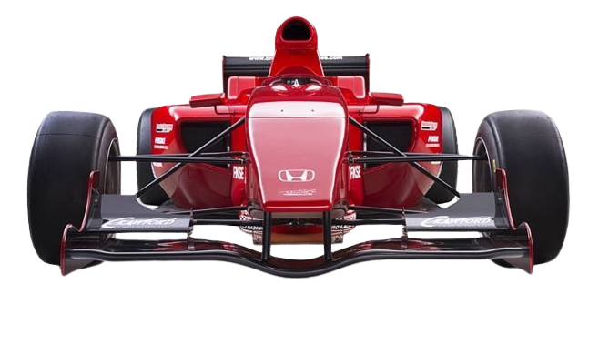
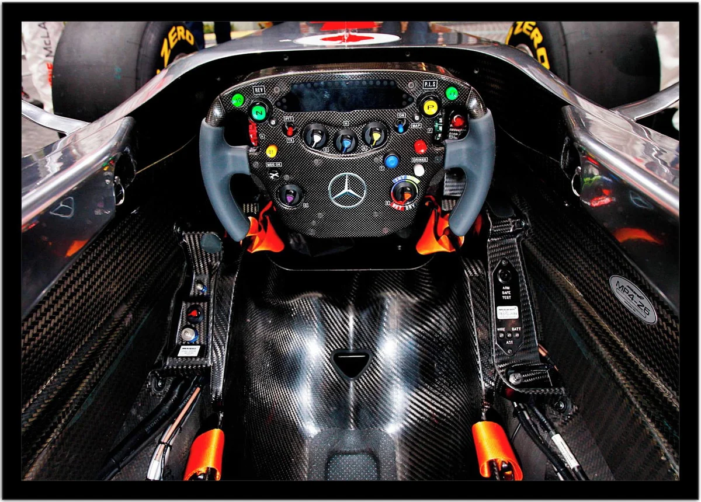
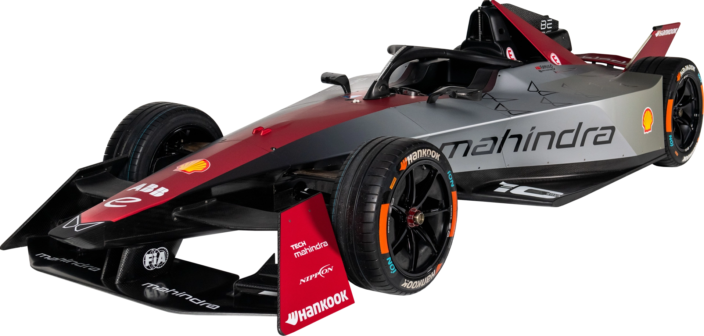
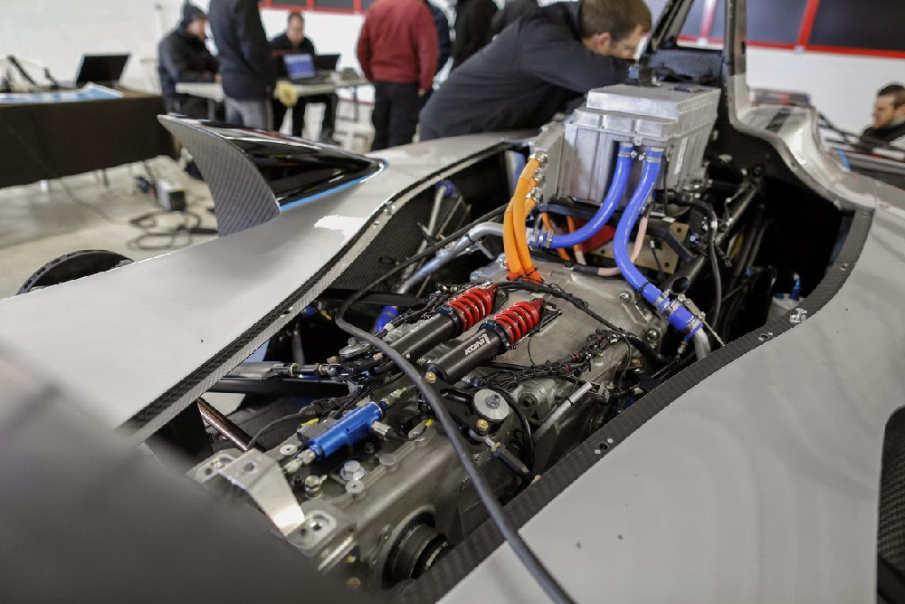

Temperatura
24ºC
Velocidade
320 Km/h
Bateria
91%

contextualização do problema:
Estamos desenvolvendo junto com a equipe de automobilismo Tech Mahindra algumas estratégias de como aumentar a popularidade da Fórmula E, para isso decidimos analisar a dor dos possíveis telespectadores e encontrar soluções viáveis para atrair o interesse das pessoas sobre essa modalidade que tem crescido no mundo das corridas.

• Site a respeito da Fórmula E: (desenvolver um e site em HTML adicionando informações sobre a Fórmula E, tivemos a ideia de adicionar os links dos sites que transmitem essa modalidade e adicionar explicações de como fazer uma conta nesses sites por exemplo a Band que necessita ter uma conta para assistir a transmissão ao vivo).
• Vantagens dos carros elétricos: (Podemos mostrar para as pessoas dados sobre o mal que carros movidos a combustível fóssil causam ao meio ambiente comparado ao carro elétrico).
Soluções
• Aparelhos para simularem o som: (utilizando o aprendizado em Arduino para criar um dispositivo para simular o som dos carros de Fórmula movidos por combustível fóssil assim chamando a atenção dos consumidores de automobilismo que gostam desse som).• Site a respeito da Fórmula E: (desenvolver um e site em HTML adicionando informações sobre a Fórmula E, tivemos a ideia de adicionar os links dos sites que transmitem essa modalidade e adicionar explicações de como fazer uma conta nesses sites por exemplo a Band que necessita ter uma conta para assistir a transmissão ao vivo).
• Vantagens dos carros elétricos: (Podemos mostrar para as pessoas dados sobre o mal que carros movidos a combustível fóssil causam ao meio ambiente comparado ao carro elétrico).

• Silêncio dos Carros (A falta de ruído dos carros elétricos pode diminuir a emoção das corridas automobilísticas para os espectadores que apreciam o som dos motores)
• Preconceito com carros elétricos (Os novos carros não movidos por combustível fóssil ainda enfrentam um preconceito, dificultando a aceitação do público em geral)
• Dispositivos de som (A implementação de dispositivos de simulação de som podem atrair mais telespectadores, aumentando a divulgação do esporte.)
• Conscientização ambiental (Apresentar as vantagens dos carros elétricos, como a redução da emissão de carbono e os benefícios para o meio ambiente, podendo ajudar a percepção do público e aumentar o interesse pela Fórmula E)
Comparação
Impactos Negativos:
• Baixa visibilidade (A falta da transmissão na televisão aberta limita a visibilidade da Fórmula E)• Silêncio dos Carros (A falta de ruído dos carros elétricos pode diminuir a emoção das corridas automobilísticas para os espectadores que apreciam o som dos motores)
• Preconceito com carros elétricos (Os novos carros não movidos por combustível fóssil ainda enfrentam um preconceito, dificultando a aceitação do público em geral)
Impactos Positivos
• Aumento da visibilidade (um site pode trazer uma maior divulgação em plataformas online e aumentar significativamente a visibilidade da Fórmula E, atraindo novos telespectadores)• Dispositivos de som (A implementação de dispositivos de simulação de som podem atrair mais telespectadores, aumentando a divulgação do esporte.)
• Conscientização ambiental (Apresentar as vantagens dos carros elétricos, como a redução da emissão de carbono e os benefícios para o meio ambiente, podendo ajudar a percepção do público e aumentar o interesse pela Fórmula E)